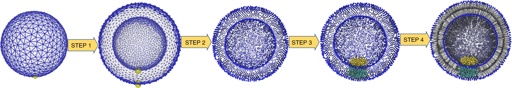
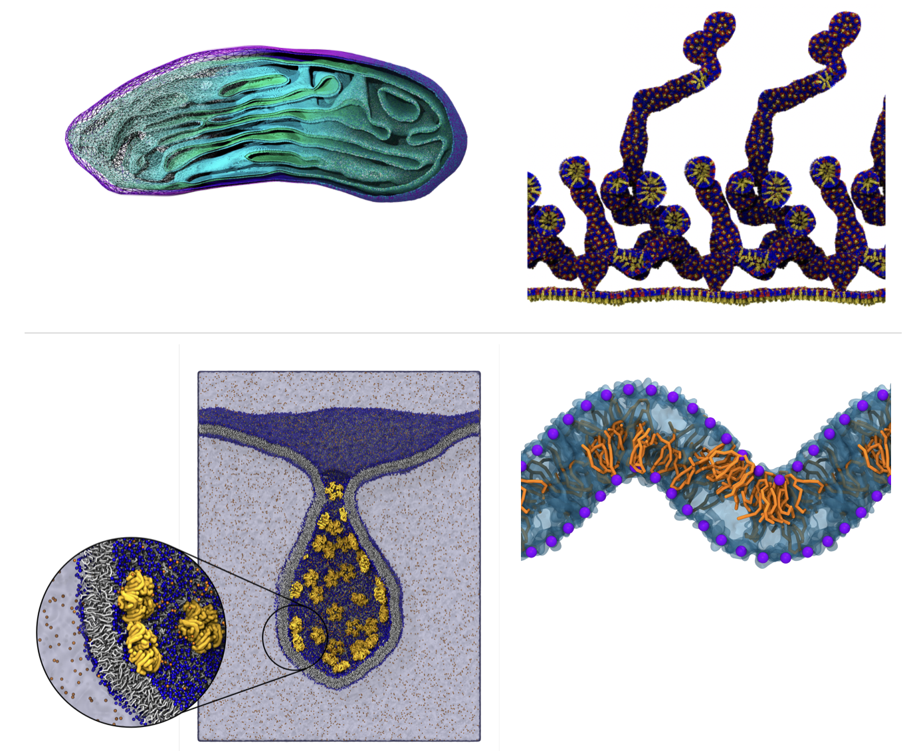
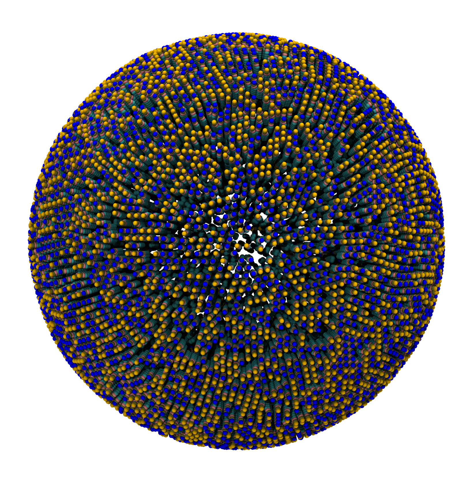
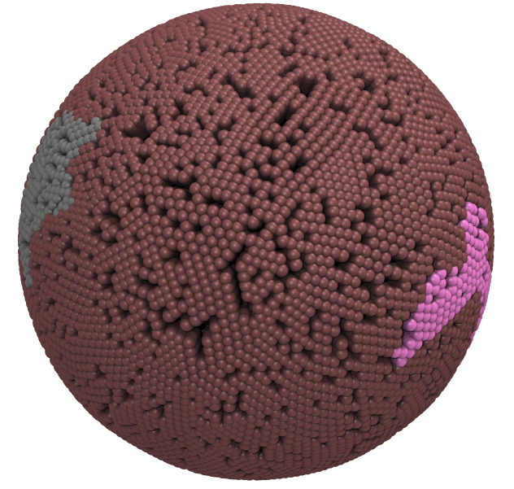
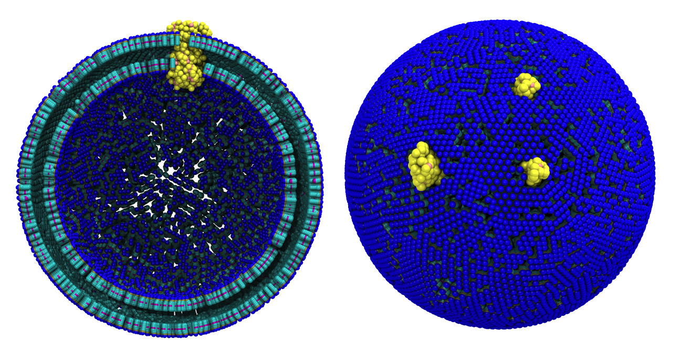
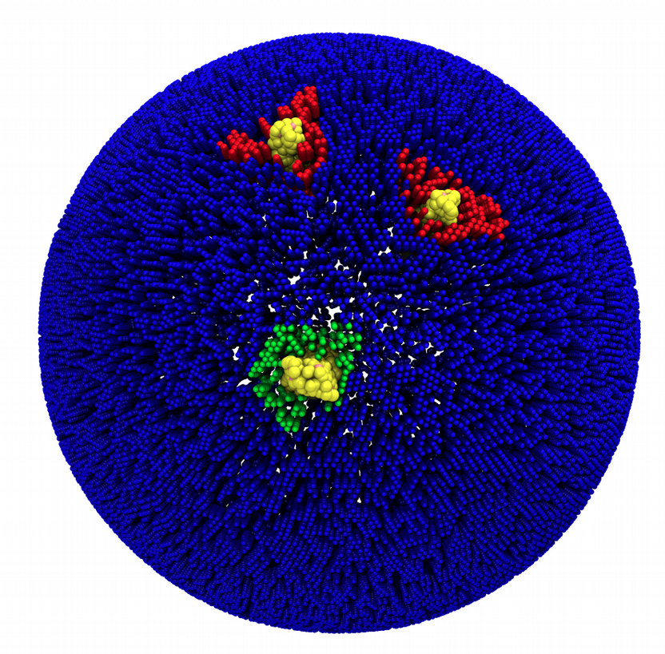
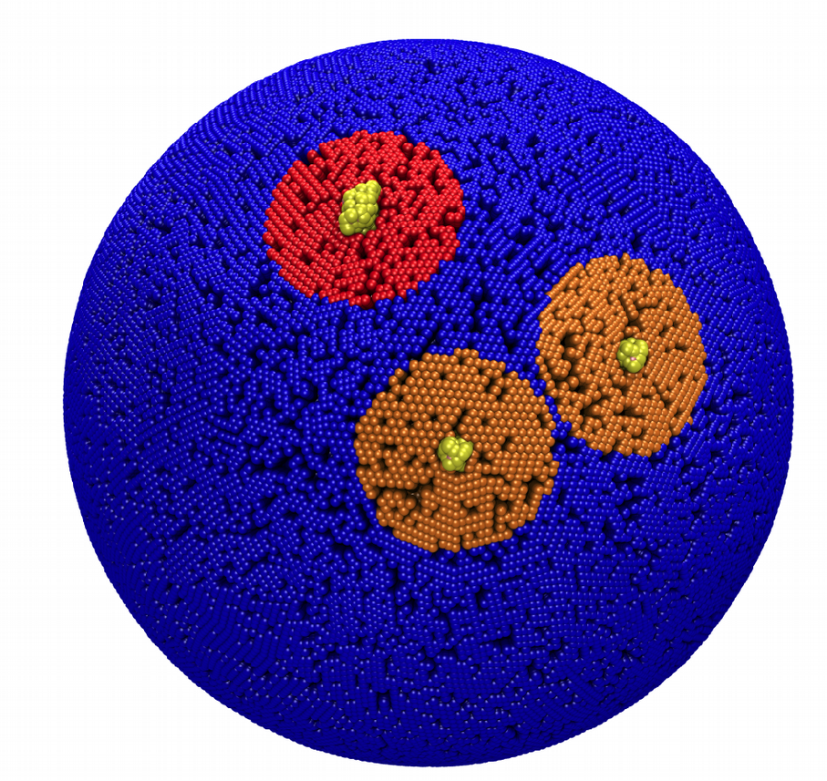
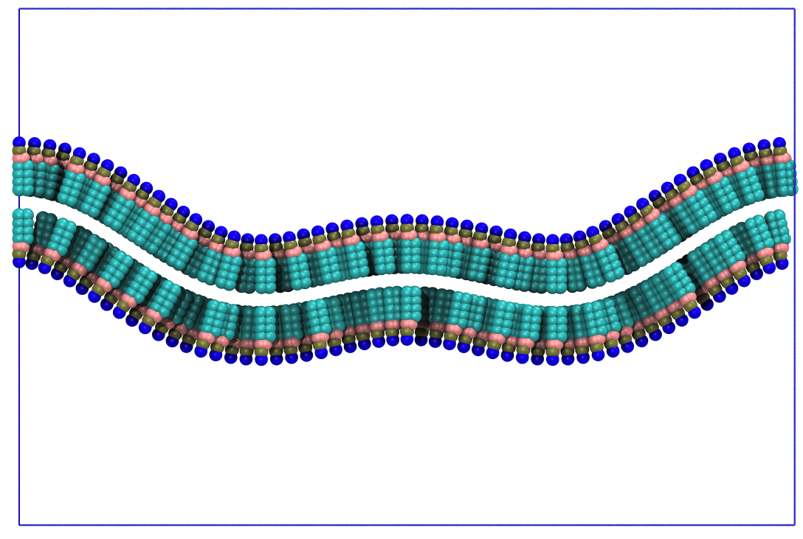

TS2CG: membranes with user-defined shapes and compositions
In case of issues, please contact w.pezeshkian@rug.nl or m.konig@rug.nl.
Summary
Introduction
TS2CG is used to build coarse-grained membrane models with user-defined shapes and compositions. Initially, it was developed for backmapping dynamically triangulated simulation structures into their corresponding molecular models. This gives us the possibility to incorporate experimentally obtained membrane shapes and compositions and generate CG membrane’s initial structure.
In Fig. 1 the general workflow of TS2CG is exemplified for a vesicle containing a single protein (shown as a yellow bead). The initial triangulated surface is rescaled to the desired system size and the two monolayers are generated. In order to have enough points for the subsequent lipid placement, the number of vertices in both monolayers is increased using a pointillism operation, i.e. each triangle is divided into four new triangles thereby increasing the number of vertices by a factor of four. In the last steps, proteins and lipids are placed on the respective vertices. For more details on the method, please refer to the original paper[1].

Currently, TS2CG version 1.1 can utilize two types of TS input file formats: Files with .q and .tsi extension. While both are quite similar, .tsi files are more generic and future developments will be based on this file format. For more details about the .tsi file format see the end of this file. In tutorials 1 to 5 we will use a .tsi file called Sphere.tsi to build a simple vesicle and subsequently add different membrane domains with and without protein insertions.
Additionally, TS2CG can be used to create well-defined (analytical) shapes from scratch. In tutorial 6 we will demonstrate how to build a curved bilayer and maintain the curvature using a shape-preserving wall.

TS2CG. Mitochodrion lipid membrane backmapped from EM map (upper panel left), protein induced membrane tubulation backmapped from DTS simulation (upper panel right), budded lipid bilayer including STxB proteins backmapped from DTS simulation (lower panel left) and curved lipid bilayer with two different lipid types created from scratch using PCG.Download and install TS2CG
Download the latest version of the TS2CG from:
For compiling, gcc version 8.3.0 or above is needed.
In the source code folder, execute the script compile.sh as:
./compile.shIn this folder, two binary files will be generated: PLM and PCG (and a SOL script for adding solvent to the systems). PLM performs pointillism (Step 1 and 2) and PCG performs Membrane builder (Step 3 and 4).
Tutorials
From the downloaded TS2CG folder, you can find all the files needed for these tutorials in the tutorials folder. Please create a new folder for each tutorial and copy the files you from the files folder into this new folder.
1: Creating a simple vesicle
In this tutorial we will use a simple TS file (sphere) to create a vesicle. We choose this shape because it is small and can be run on your local machines. However, the same scheme can be used for any other TS files.
From the files folder select the Sphere.tsi file. Use a text editor to open this and familiarize yourself with the structure. See .tsi file format at the end of this document for more information about the file format. You can also use pymol or paraview to visualize the structure (see Visualizing .tsi or .q files).
The first step in backmapping any TS file to a CG structure is to increase the number of vertices using a pointillism operation (done by PLM). In the same step we also generate the two monolayers.
Path_to_TS2CG/PLM -TSfile Sphere.tsi -bilayerThickness 3.8 -rescalefactor 4 4 4 In the pointvisualization_data folder, you will find gromacs compatible structure files (.gro) for the upper and lower monolayer including a topology file (.top) each as well as paraview compatible .vtu files for both monolayers. You can have a look at the created points using vmd or paraview.
The second step to create a vesicle is two place lipids on the generated points using PCG. For this you need to write a .str file defining the lipid composition of both monolayers. Using any text editor, create an input.str file and write the following text in it:
[Lipids List]
Domain 0
POPC 1 1 0.64
EndThis implies that your system should contain only one lipid domain with POPC in both monolayers using an area per lipid (APL) for POPC of 0.64. To know more about the .str file format and other options see the User Manual.
The other thing we need is a lipid structure file (.LIB). This file simply defines the lipid connectivity for placing the lipid beads on the previously generated points. Making this file is easy but might be time consuming for many different lipids. (See the User Manual for the exact file format). Luckily, we already have a file that contains all Martini3 lipids called Martini3.LIB, you can find it in the files folder.
Using these two files now you can execute PCG:
Path_to_TS2CG/PCG -str input.str -Bondlength 0.2 -LLIB Martini3.LIB -defout systemThe outputs are system.gro and system.top:

vmd (left) and the corresponding topology file (right).;This file was generated by TS Back Mapping
[ system ]
Expect a large membrane
; domain 0
; in the upper monolayer
POPC 6256
; domain 0
; in the lower monolayer
POPC 3876Creating vesicles like shown above is straightforward however running them is not so simple. Here we used the assumption that POPC has the same area per lipid in both leaflets which is unfortunately not true for small vesicles due to the highly curved nature of the leaflets. To account for the curvature effect we have to allow the vesicle to equilibrate both water content and number of lipids in each leaflet. The easiest way to do this is by creating water pores for equilibration and closing theses pores in a step-wise manner. You can find a script called run_vesicle.sh in the files folder, which will create a POPC vesicle with 4 nm pores along each dimension. The vesicle will also be filled with water, energy minimized and equilibrated, thereby gradually closing the water pores. Note: We use MDAnalysis to create a position restraints file which is need to keep the lipid tails out of the pores.
2: Creating lipid Mixture
Repeating the previous tutorial but with the .str file shown below, you will create a 50/50 mixture of POPC and DOPC in both monolayers.
[Lipids List]
Domain 0
POPC 0.5 0.5 0.64
DOPC 0.5 0.5 0.67
EndExecuting PCG will generate two output files system.gro and system.top:

;This file was generated by TS Back Mapping
[ system ]
Expect a large membrane
[ molecules ]
; domain 0
; in the upper monolayer
POPC 3056
DOPC 3056
; domain 0
; in the lower monolayer POPC 1893
DOPC 18933: Membrane domains
To make a membrane containing two or more different lipid domains, we need to modify the .tsi file. These changes can be made manually or by using a script. Here we only try it manually.
First use the command below to obtain a .gro file containing all the vertices:
Path_to_TS2CG/PLM -TSfile Sphere.tsi -bilayerThickness 0 -rescalefactor 0.2 0.2 0.2 -Mashno 0This time, we reduced the size of the original .tsi file (using -rescalefactor 0.2 0.2 0.2) and kept the initial number of vertices (using -Mashno 0). This allows for an easier selection of points when done manually. Now, open the file Upper.gro from the pointvisualization_data folder using vmd. You will see all the vertices of the triangulated surface. Find a few beads for which you want to create a new domain of lipids (e.g. select beads in vmd using Mouse > Label > Atoms). I selected vertices [113, 117, 124, 48, 112] for domain number 1 and [74, 82, 81, 45] for domain number 2 and the rest remains as domain 0.
Next, open Sphere.tsi using a text editor and find the line of selected vertices. Add the domain ID to the end of the line (here: add a 1 for vertices with index 113, 117, 124, 48, 112 and a 2 for vertices with index 74, 82, 81, 45). Note: Lines that do not have any domain ID belong to domain 0 per default. After doing so, you need to modify the input.str file to define the lipid composition of each domain:
[Lipids List]
Domain 0
POPC 1 1 0.64
End
Domain 1
DOPC 1 1 0.64
End
Domain 2
POPE 1 1 0.64
EndThen execute PLM and PCG using the commands below (as done in the previous tutorials). This will generate a vesicle with three lipid domains.
Path_to_TS2CG/PLM -TSfile Sphere.tsi -bilayerThickness 3.8 -rescalefactor 4 4 4Path_to_TS2CG/PCG -str input.str -Bondlength 0.2 -LLIB Martini3.LIB -defout system
vmd (left) and the corresponding topology file (right).;This file was generated by TS Back Mapping
[ system ]
Expect a large membrane
; domain 0
; in the upper monolayer
POPC 5833
; domain 0
; in the lower monolayer
POPC 3615
; domain 1
; in the upper monolayer
DOPC 262
; domain 1
; in the lower monolayer
DOPC 161
; domain 2
; in the upper monolayer
POPE 160
; domain 2
; in the lower monolayer
POPE 994: Adding proteins to a membrane
In this tutorial we are going to add two types of proteins to a vesicle containing POPC lipids. These proteins are named P1.gro and P2.gro, which will be called protein1 and protein2 in the rest of this tutorial. First, we need to select vertices for the protein placmenent in the .tsi file. Afterwards, we match their corresponding names in the .gro file with the ones in the .str file. Therefore, we need to perform some tricks on the .tsi and .str file. These changes can be made manually or by using a script. Here we only try it manually.
First, use the below command to obtain a .gro file of vertices positions of our vesicle:
Path_to_TS2CG/PLM -TSfile Sphere.tsi -bilayerThickness 0 -rescalefactor 0.2 0.2 0.2 -Mashno 0Then in the pointvisualization_data folder, open Upper.gro using vmd. You will see all the vertices of the triangulated surface. Find some vertices at which you would like to place the proteins. We selected vertices 22 and 5 to place two copies of protein1 and vertex 30 to place one copy of protein2. Using a text editor, open the Sphere.tsi file and go to the bottom of the file to the inclusion section. As we want to add 3 proteins, change the zero to 3 and then in the next line, add the protein information. For each protein, you need 3 integer numbers and 2 float numbers. The first number is the protein index that should start from 0. The second number is the protein type id, which is 1 for potein1 and 2 protein2 (it can be any number but the type id must match the one in input.str, see below). The third number is the index of the vertex that the protein will be placed on. The last two numbers are the orientation of the protein in the local coordinate frame of the vertex, these should be a unit two-dimensional vector. The inclusion section of Sphere.tsi file should look like this:
inclusion 3
0 1 22 0 1
1 1 5 0 1
2 2 30 0 1Now, open P1.gro and P2.gro from the files folder and change the first line to the name of the proteins (protein1 and protein2). These files should be included on top of your input.str file as:
include P1.gro
include P2.groThe last step is to define the proteins in the input.str file. In addition to including the protein .gro file names in the header, there should be some information about the protein placement:
[Protein List]
protein1 1 0.01 0 0 -3.7
protein2 2 0.01 0 0 -2.4
End ProteinThe first and the last line are keywords indicating that we want to define proteins. The lines in between the first and the last depend on the number of unique proteins you want to include. Here we got two, therefore we only have two lines in between. The first entry is the protein name in the .gro file. The second entry indicates the protein type ID (this ID was used in the .tsi file in the inclusion section). The last entry indicates how much we should move the proteins in the normal direction of the membrane surface. The remaining three numbers are not being used in the current approach.
Finally, you can execute PLM and PCG using the commands below (or as previous tutorials). The result should be a POPC membrane with three proteins.
Path_to_TS2CG/PLM -TSfile Sphere.tsi -bilayerThickness 3.8 -rescalefactor 3 3 3Path_to_TS2CG/PCG -str input.str -Bondlength 0.2 -LLIB Martini3.LIB -defout system
5: Proteins with a specific domain
In this tutorial we are going to combine Tutorials 3 and 4 to define a specific lipid domain for each protein copy. So let’s change the domain ID of vertices 22, 5, 30 that are supposed to be the location of the proteins in Sphere.tsi as demonstrated in Tutorial 3. We set 22 and 5 to domain 1 and 30 to domain 2. We also change the lipid section in input.str to:
[Lipids List]
Domain 0
POPC 1 1 0.64
End
Domain 1
DOPC 1 1 0.64
End
Domain 2
POPE 1 1 0.64
EndNow perform PLM and PCG again:
Path_to_TS2CG/PLM -TSfile Sphere.tsi -bilayerThickness 3.8 -rescalefactor 6 6 6Path_to_TS2CG/PCG -str input.str -Bondlength 0.2 -LLIB Martini3.LIB -defout system
You may not be happy about the lipid domain around the proteins. Since the resolution of the .tsi file is low, the shape of the lipid domain around the proteins gets strongly affected by the discretization. This can be improved with a little bit of effort.
Use Sphere.tsi from the files folder and add the same inclusion section as before but without adding the lipid domains. The end of your .tsi file should look like this:
inclusion 3
0 1 22 0 1
1 1 5 0 1
2 2 30 0 1Now we are adding the lipid domains around each protein copy using a small script. But first we need to increase the number of the triangles and global size of the system without affecting the shape of the .tsi file:
Path_to_TS2CG/PLM -TSfile Sphere.tsi -bilayerThickness 0 -rescalefactor 8 8 8The output .tsi file is called extended.tsi. Change the name of this file to Sphere_2.tsi.
Next, compile tsi_format.cpp, which can be found in the files, for creating the lipid domains using c++:
g++ -o domain tsi_change.cppand then execute following command to create lipid domains with diameter of 8 nm around each protein copy:
./domain Sphere_2.tsi Sphere_domain.tsi 8The Sphere_domain.tsi file is the new .tsi file which contains the Sphere_2.tsi surface and protein information. The domain ids around each protein match the protein ids. Next, we are going to perform PLM and PCG using Sphere_2.tsi. This time we ask PLM to not to extend the surface and just create the two monolayer.
Path_to_TS2CG/PLM -TSfile Sphere_domain.tsi -bilayerThickness 4 -rescalefactor 1 1 1 -Mashno 0 Path_to_TS2CG/PCG -str input.str -Bondlength 0.2 -LLIB Martini3.LIB -defout systemYou should get an output as shown below figure.

6: Fixed shapes
Without a need for a .tsi file, PCG also allows for creating membranes with certain fixed shapes such as flat bilayers, spheres, cylinders and other periodic shapes that can be written as a sum of fourier 1D modes. This is a new feature of PCG and therefore some limitations exist. There is also a wall option that allows you to keep the shape during both the equilibration and production run.
Path_to_TS2CG/PCG -str input.str -Bondlength 0.2 -LLIB Martini3.LIB -defout system -function analytical_shapeIn the .str file the shape information is defined as below for creating different shapes.
Note: Not all the options need to be specified in the .str file. The shape type option is needed but you could use the default values for the rest.
|
Cylinder
[Shape Data] |
1D Fourier Shape
[Shape Data] |
|
Sphere
[Shape Data] |
Flat
[Shape Data] |

Creating the Wall
To generate the wall beads, you need to add the following flags to the PCG command line:
-Wall -WallBName WLNote, it is all on you how to make the wall bead to interact with the bilayer for keeping the shape. However, the best option is to create a repulsive LJ interaction between the wall beads and lipid tail beads while the wall beads are invisible to other beads in the system. Example .mdp can be found in files/mdp_wall.
General information on how to run the outputs from TS2CG
- A short (100 steps) energy minimization with softcore potentials while restraining the lipid headgroups and protein backbones.
- Normal energy minimization without solvent.
- Short equilibration without solvent.
- Solvation (Note: Before solvation, always make sure the box size is what you need).
./SOL -in input.gro -tem water.gro -unsize 3 -ion 0 0 -o solvated.gro -Rcutoff 0.32- Energy minimization.
- Equilibration.
- Production run.
.tsi file Format
The following shows a part of a .tsi file with all necessary keywords highlighted in bold. Every .tsi file starts with a line calling version 1.1 of TS2CG. The next line defines the box size (x, y, and z) of the system in nm. The next three sections describe the TS mesh. Each section starts with a keyword (vertex, triangle and inclusion) and their corresponding number. Here, we have 130 vertices (the numbering starts from 0). Each vertex has an index and a position in x, y and z (in nm). Additionally, a vertex can have a domain id, e.g., vertices 1, 126 and 127 belong to domain 1. The default domain is 0. The 130 vertices are connected via 256 triangles. Again, every triangle has an index (starting from 0) and is defined by the vertices the triangle connects, i.e. triangle 0 connects vertices 11, 55 and 43. Furthermore, a .tsi file can have a (protein) inclusion section. Here, there are three inclusions from two different types. Again, each inclusion has an index. The index is followed by the inclusion type (here: type 1 for inclusions 0 and 1, type 2 for inclusion 2) and the corresponding vertex index. The last two (floating point) numbers describe a unit two dimensional vector (sum of both numbers must be one!) which defines the orientation of the inclusion with respect to the bilayer normal.
version 1.1
box 50.0000000000 50.0000000000 50.0000000000
vertex 130
0 21.1606233083 25.4394806652 25.5960855271
1 27.0284995400 23.2012757654 21.6715285158 1
2 26.9921761232 25.5136587223 28.0195776981
3 23.3273229896 26.2315165676 28.0075875808 2
4 26.2722773116 26.3271061222 28.1420707299
5 22.0396876425 23.6080597437 26.8858740866 2
.
.
.
125 21.5556280860 25.5595098219 26.5363425272
126 23.2182025326 26.8060871266 21.5195141902 1
127 25.3199303865 24.3519379911 20.6752314764 1
128 28.0093200458 22.6356946990 23.4685318698
129 21.4000741257 26.5841316766 25.2761757772
triangle 256
0 11 55 43
1 94 75 14
2 64 3 91
3 59 52 40
.
.
.
253 33 109 44
254 53 69 47
255 85 6 74
inclusion 3
0 1 22 0 1
1 1 5 0 1
2 2 30 0 1
Visualizing .tsi or .q files
From the files folder in the tutorial folder copy a .tsi file in your working folder. These files can be visualized using pymol, vmd or paraview.
Pymol
You need PyMOL2q.py from the TS2CG folder then do the following steps:
- Load
Pymol. - On
pymolwindow, execute“run PyMOL2q.py” - Then execute
“loadq Your_TS_File.tsi”
paraview or vmd visualization of the generated points
Path_to_TS2CG/PLM -TSfile Your_TS_File -bilayerThickness 0 -rescalefactor 1 1 1 -Mashno 0Then in pointvisualization_data folder, you can find several files and it is the gro file which can be used for visualization.
How to obtain a TS file
TS files can be obtained from different sources. 1) Form DTS simulations or 2) by converting density points to mashes for example using Blender, Geogram and GAMer. When using Blender you can import any .stl file or other 3D file and use blender_mesh2tsi.py which can be found in the files folder.
Tools and scripts used in this tutorial
GROMACS(http://www.gromacs.org/)
References
[1] Pezeshkian, W., König, M., Wassenaar, T.A. et al. Backmapping triangulated surfaces to coarse-grained membrane models. Nat Commun 11, 2296 (2020) (https://doi.org/10.1038/s41467-020-16094-y)